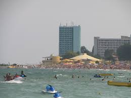
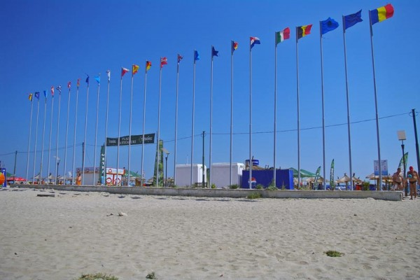
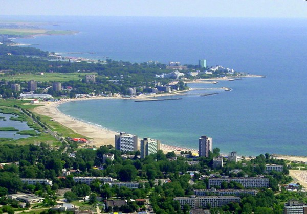
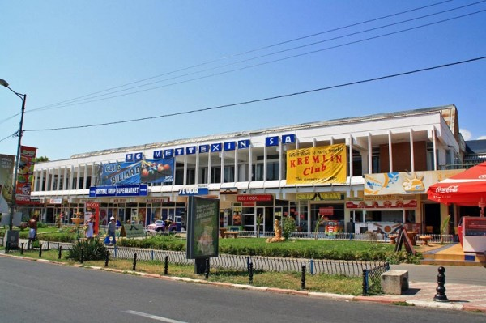
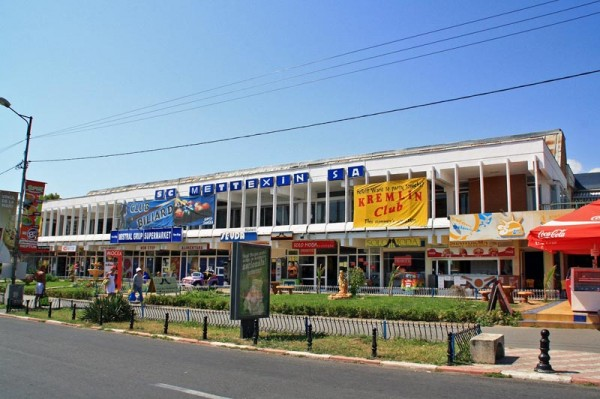

Neptun este o staţiune balneoclimaterică ce aparţine municipiului Mangalia, din judeţul Constanţa,.Neptun este una dintre cele şase staţiuni de pe litoralul românesc situate în arealul Comorova din raza oraşului Mangalia.Olimpul, a cărui construcţie a fost terminatăîn 1972, reprezintă cartierul nordic al staţiunii Neptun.
Staţiunea Neptun se află in extremitatea sud-estică a Romaniei, într-o zonă cu o vegetaţie relativ bogată, pădurea Comorova, pe ţărmul Mării Negre, la 7 km nord de oraşul Mangalia şi la 38 kilometri de Constanţa.

Printre posibilitatile de agrement se numără un cinema în aer liber, Teatrul de Vară, Bazarul Neptun, debarcaderul, terenurile polivalente de sport, două terenuri de minigolf, un parc de distracţii, facilităţile pentru sporturi nautice şi un sat de vacanţă.
Restaurantele oferă o bogată varietate de preparate culinare autohtone, specialităţi din peşte şi programe folclorice. Există posibilităţi diverse de practicare a sporturilor nautice pe mare sau pe lacul Neptun.
Punctul forte al staţiunii îl reprezinta plaja, La Steaguri, considerată de unii turişti ca fiind cea mai bine amenajata plaja de pe litoral, avand nisip fin şi intrare în mare lină cu fund nisipos.

Aici se pot trata boli reumatismale degenerative, inflamatorii şi diartritice, stări posttraumatismale, boli ale sistemului nervos periferic, boli dermatologice, tulburări respiratorii şi de alta natură.

Factorii de cură naturală sunt clima marină bogatăîn aerosoli salini şi radiaţii solare, apa de mare clorată, sulfatată, sodică, magnezianăşi hipotonică (grad de mineralizare: 15,5 gr.), izvoarele de ape sulfuroase mezotermale (22-27 grade Celsius), şinămolul sapropelic extras din Lacul Techirghiol.
 
